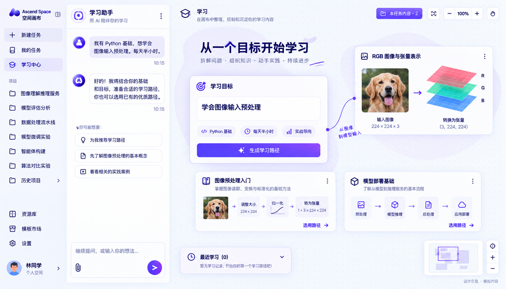
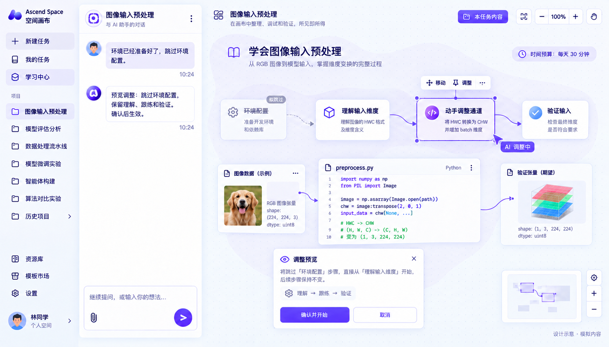
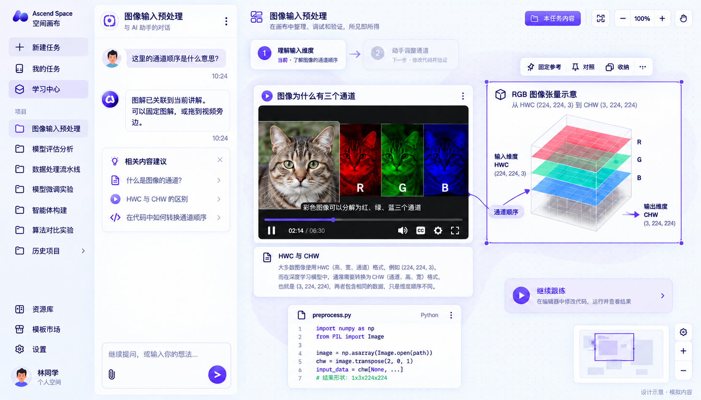
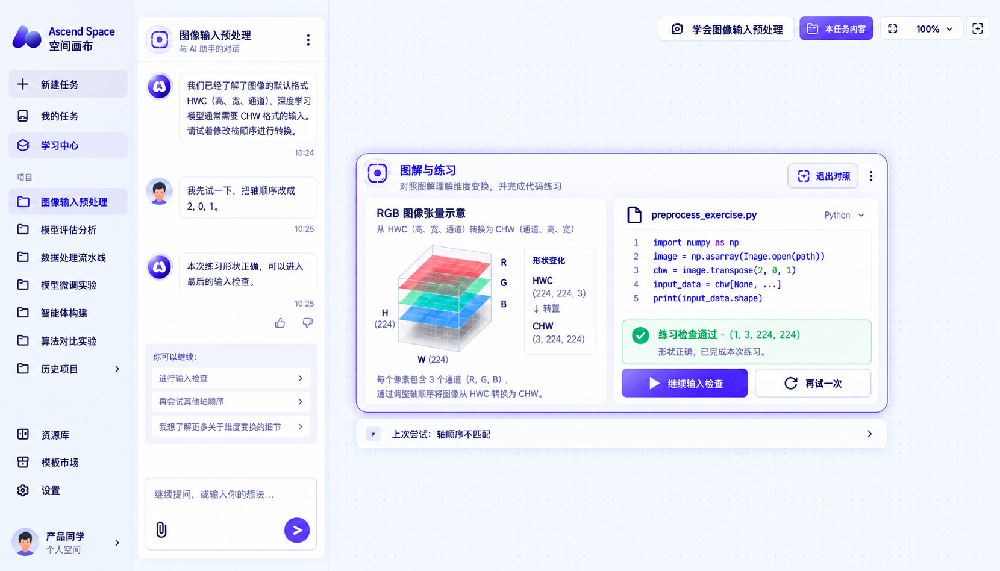
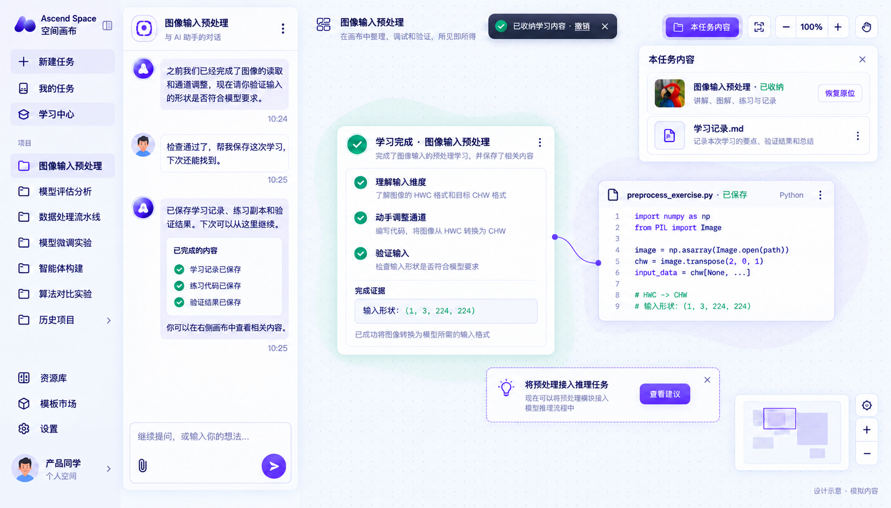
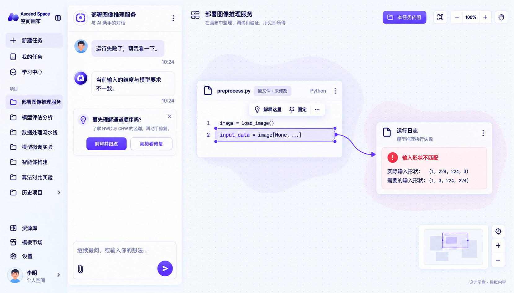
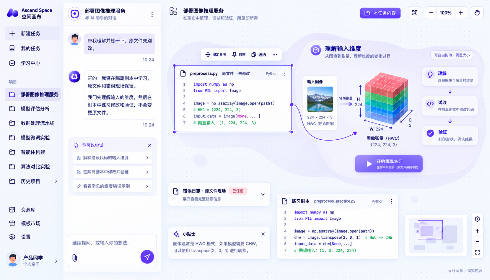
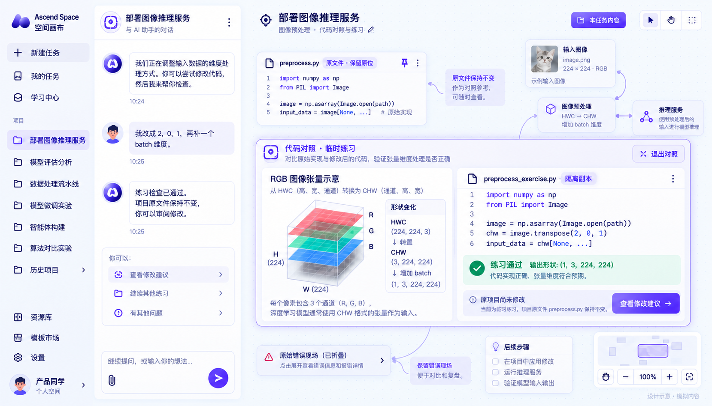
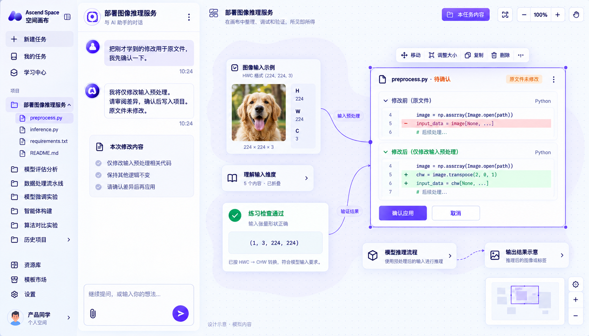
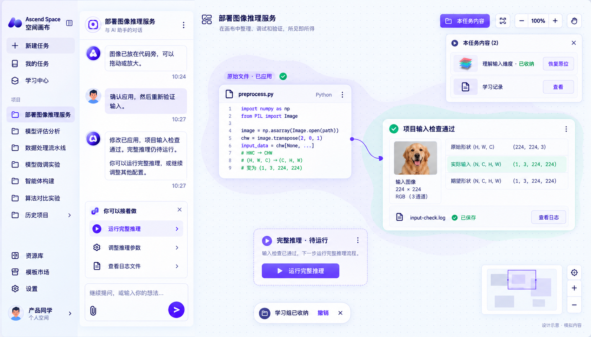

代码完成了，知识不一定留下
从“查找—理解—实践”的传统路径，到“描述目标—生成—验证”的 AI 开发方式，学习发生的方式正在变化。我们需要重新设计知识进入任务的时机。
主动交互的起点：
AI 先发现值得处理的事
返回即看见待处理事项：For you 主动列出广告追踪缺失、流量下降等情况。Recents 与 Scheduled Ploybooks 同屏，区分近期工作与未来安排。
建议带着依据：Google Ads 卡片解释已连接服务但未检测到追踪标签，并说明对转化归因的影响；Why this 标注关联来源。
用户可以接住或关闭：Run Ploy 紧贴建议，右上角有关闭入口。理由、对象与下一步集中呈现，用户可当场决定是否继续。
把“先做准备”和
“正式生效”分开
持续服务有明确范围：Agent permissions 直接说明该站点有哪些动作可以无需确认。主动性与授权放在同一套交互里。
预览可以先行：Preview only 允许产出预览，并明确写出生产发布仍需确认。用户可委托准备工作，保留正式生效前的决定权。
更大权限说明后果：Preview + Production 旁直接交代无需确认上线，黄色提示贴近选项。用户在选择时就能理解影响。
从写代码的 IDE，
转向共同完成任务的 Workspace
现场发生变化：Vibe Coding 普及后，开发者从逐行写代码，转向围绕目标与 AI 协作完成任务。
不只生成代码：任务、对话、Diff 和运行结果需要持续关联，开发者要随时知道改了什么、为什么改、是否可接受。
Workspace 的价值：把意图、改动和验证留在同一现场，减少在 IDE、对话和结果之间反复切换。
边讨论目标，
边检查实际产物
产品观察：Ploy 的 Getting Started 对话保留导入过程和后续意图选项，右侧同时展示实际页面预览。用户可以结合产物继续表达目标。
协作重心扩展：在 AI 参与执行的工作方式中，目标表达、过程反馈与产物审阅成为连续活动。Workspace 可以承接这类任务协作，IDE 仍有专业编辑与调试价值。
对学习的启发：解释所围绕的对象保持可见，用户可在对话与产物之间核对理解。这为任务中插入学习提供空间，而非要求先离开任务。
学习目标：学会图像输入预处理；终点：完成讲解、跟练与输入检查，保存可恢复的学习记录。





表达目标 · 用户如何接着做
用户：进入“学习”，输入基础、目标和时间；也可选用已有路径。
1. 双入口汇合
对话提目标与浏览现有路径，共同进入可编辑的路径草案，支持明确目标和探索式进入。
2. 意图可见
基础与时间贴在目标旁，用户能检查 AI 使用了哪些信息，并直接修改。
3. 按需展开
初访画布保留空间，课程预览作为独立对象存在；后续内容围绕选择展开。
内容管理
初始只展开目标和少量相关预览；“本任务内容”保持关闭。
下一步
点击“生成学习路径”或“选用路径”，进入同一份可审阅草案。
调整路径 · 用户如何接着做
用户：告诉 AI“环境已准备好，跳过环境配置”；查看被影响的节点。
1. AI 操作落在对象上
在路径节点上显示选中、定位与拟变更状态，让用户看见 AI 正在改哪里。
2. 两种编辑共用预览
对话修改与节点直接操作都产生同一份变更预览；本图展示跳过，拖动排序沿用此规则。
3. 确认后再生效
“拟跳过”和确认／取消把草案与正式路径区分开；已有学习记录随节点保留。
内容管理
路径是画布中的可移动对象；选择节点才出现操作条，修改不重排其他参考。
下一步
确认并开始后，沿保留的“理解 → 跟练 → 验证”进入学习。
理解内容 · 用户如何接着做
用户：观看讲解，在不理解的字幕处提问，再固定或移动图解。
1. 从内容发起解释
疑问绑定当前视频片段和概念，图解与字幕保持可见关联，减少反复描述。
2. 自由组织参考
图解有选中边框和就地工具条；可固定、放大或移到视频旁，阅读时位置稳定。
3. 节点自然接续
在当前内容下提供“继续跟练”；目标和完成标准沿用已确认路径，无需再次制定。
内容管理
视频、笔记、图解属于轻分组；对象可拖动、缩放、固定，无常驻功能 Tab。
下一步
点击“继续跟练”，当前图解可作为参考带入练习。
跟练验证 · 用户如何接着做
用户：把轴顺序改成 2,0,1，补充 batch 维度，运行练习。
1. 临时聚焦
选定材料进入对照，减少视线往返；退出后恢复自由布局，聚焦不改变空间组织。
2. 反馈归属本次尝试
通过或失败直接跟在代码下面，上次结果折叠保留，便于比较修改和结果。
3. 按结果继续
通过后给出下一节点；失败时在当前内容中重试或补解释，不要求用户切换学习模式。
内容管理
“退出对照”恢复对象原位；前一段相关内容折叠，固定的参考仍可见。
下一步
检查通过后继续输入检查；若失败，就地提示并重试，原练习现场保留。
完成保存 · 用户如何接着做
用户：完成输入检查，保存学习记录与练习内容。
1. 完成与证据相连
完成摘要列出学过的内容和输入形状，区分“看过”与“练习检查通过”。
2. 收纳保留上下文
按组保存讲解、图解、练习与记录；恢复的是原对象及关系，不再复制一套内容。
3. 建议可选择
后续实践建议独立、可关闭；完成当前学习后，用户决定是否开启下一任务。
内容管理
收纳浮层按需打开；恢复返回同一组及原位置，撤销可立即找回。
下一步
下次从“本任务内容”恢复原位；是否进入推理任务由用户选择。
开发任务：部署图像推理服务；插入学习：理解并修正输入维度。学习完成后返回开发，完整推理仍是下一项任务。





发现问题 · 用户如何接着做
用户：运行失败后请求诊断，或直接追问“为什么、怎么理解”。
1. 主动建议有依据
建议紧邻诊断回复，错误日志与代码有可见关联，用户能理解为什么建议学这一段。
2. 按当前意图主动展开
问“为什么”时，回答与相关图解同步展开；只报错或要求修复时，先给简短依据与深入入口。
3. 保持当前阅读现场
代码、日志和实际／预期形状沿任务保留；阅读或编辑时，新建议先轻提示，不替换当前内容。
内容管理
提问时展开相关解释，原文件、日志与对话位置保持；无需先进入画布。
下一步
表达“试一下、采用、检查”时，直接接续对应操作；图解内可调参，结果就地更新。
展开学习 · 用户如何接着做
用户：要求先理解并练习，同时明确原文件暂不修改。
1. 任务连续
左侧仍选中开发任务，中间沿用当前对话；学习是任务内的一段活动。
2. 原件与副本可辨
原文件、错误现场与练习副本分别标明身份，学习操作的影响范围可见。
3. 图解内直接试改
图解中直接提供少量参数；调整后图形、代码示例与当前结果就地更新，作用范围为示例／副本。
内容管理
相关解释与原件保持可见关联；需要主动整理材料时，再打开自由画布。
下一步
直接在图解内尝试；表达采用或检查意图后，接续修改审阅或原任务检查。
隔离跟练 · 用户如何接着做
用户：修改通道顺序并补 batch 维度，运行练习检查。
1. 安全试错
修改发生在隔离副本；练习失败可以重试，不影响项目原文件。
2. 结果边界明确
通过信息显示输入形状，同时显示原项目未修改，避免把练习结果当成交付结果。
3. 随时回到现场
退出对照恢复自由布局；查看修改建议连接原文件，学习与开发之间有明确返回点。
内容管理
进入对照只影响选中的图解和练习；原文件及错误现场原位保留。
下一步
点击“查看修改建议”回到项目修改审阅。
应用修改 · 用户如何接着做
用户：要求把练习用于原文件，检查差异并确认应用。
1. 变更具体可见
删除和新增代码分开显示，用户可以定位影响范围，理解练习如何转成项目修改。
2. 验证依据可对照
练习结果保留在差异旁，为审阅提供上下文；不必重新打开全部相关内容。
3. 确认具有边界
确认应用与取消作用于这次项目修改；收起学习材料不等于应用，也不等于删除。
内容管理
相关学习内容折叠，Diff 成为当前焦点；练习结果固定为参考，不重新铺满画布。
下一步
确认后写入原文件，再进行项目输入检查；取消则保持项目不变。
返回验证 · 用户如何接着做
用户：确认应用，重新进行项目输入检查，然后收纳相关学习内容。
1. 回到原任务验证
使用项目中的修改后文件检查输入，结果与项目日志相连，完成从练习到实际文件的交接。
2. 完成状态分层
练习通过、修改应用、项目输入通过分别呈现；完整推理尚待执行。
3. 收纳后仍可复用
相关内容从当前画布移出，任务保留其索引和原位置；需要时可恢复。
内容管理
原文件与项目结果留在画布；相关学习内容进入可关闭的收纳浮层，支持恢复／撤销。
下一步
继续运行完整推理；若出现新的问题，在同一任务中再次展开相关学习。
任务中试改 · 不离开原现场
用户：围绕当前输入维度问题，在图解中调整通道顺序或 batch，直接观察本次示例结果。
1. 图解内直接调参
少量参数直接出现在图解中，并关联当前代码行；不用先点击“试一下”或打开画布。
2. 结果同步可见
参数变化后，图形、形状对照、代码示例与本次结果就地更新，用户能直接看见变化。
3. 任务内容可管理
试算只影响当前示例／隔离副本；代码、图解与结果归属同一次尝试，项目修改仍经 Diff 审阅确认。
内容管理
普通内容即可承载解释与试改；自由画布仅按整理需求打开，阅读位置保持稳定。
下一步
用户表达“采用、检查”时直接接续对应操作；示例结果与原任务验证分别呈现。
三栏各司其职，
围绕同一项任务协作
项目与任务确定工作范围；对话承接目标和过程；右侧内容工作区呈现当前需要查看的材料。学习、理解、试改与核对都落在具体任务里。
- 左栏｜项目与任务
- 定位正在处理的任务；切换任务后回到各自的对话和工作现场。
- 中栏｜任务对话
- 表达目标、查看解释、讨论方案并接续行动。
- 右栏｜内容工作区
- 查看当前对象的正文和专属工具；需要时展开，不需要时收起以腾出对话空间。
三栏不是三种并列模式；它们是同一任务中相互衔接的工作区域。
管理位置保持稳定，
内容与工具按对象变化
右侧工作区由公共外壳、专属工具和正文构成。切换对象时外壳不变；元信息和操作随对象需要出现，正文默认聚焦一份内容。
- 公共标题栏
- 一行承载“当前对象 ▾ / 全部内容 / 收起”，统一用于切换、管理和收起工作区。
- 专属工具区
- 讲解开关、复制、网页导航等工具跟随对象出现；不相关工具不占位。
- 正文容器
- 呈现当前对象的完整主体；试改、应用和核对贴着相关内容，给决策保留上下文。
当前对象元信息按需显示；右侧正文默认只有一份当前内容。
快速切换当前对象，
按需进入更多内容
当前对象菜单直接列出已有材料，并按具体问题分组；类型用于辨认内容。目录不要求用户先选类别，更多工具通过“打开其他内容”按需进入。
- 按问题分组
- 示例中的“尾块访问与范围”分组下列出线索解释、尝试记录、索引范围示例。
- 关联资料
- “相关代码与资料”单独承接已有的 Ascend C 文档。
- 按需扩展
- 当前菜单只列出已有四项；其他工具从“打开其他内容”进入，不预先铺满界面。
分组服务于具体问题；不承诺任意内容可自动归类。
代码是正文，
工具围绕代码出现
代码对象保留语法阅读、行号和滚动结构。来源复制、关联讲解等操作靠近代码，不把代码压成一张通用信息卡。
- 对象信息
- 标题栏标出当前代码对象；来源与只读说明位于正文上方。
- 代码阅读
- 行号、缩进和代码区域构成主要正文，便于浏览完整片段。
- 相关操作
- 复制来源、前往关联讲解等入口依附当前代码对象。
对象类型决定正文的阅读方式和专属工具。
网页仍是网页，
来源和边界清楚可见
浏览器型内容保留地址栏、页面导航和网页自身的阅读结构。当前截图中的页面是本地已有参考页；原站拒绝官方 HiAscend iframe 加载。
- 浏览器外壳
- 地址栏显示当前访问地址，正文区承载浏览器页面。
- 页面来源
- 本例打开仓库已有的 agent-tool-calling-reference.html 页面。
- 加载边界
- 官方 HiAscend iframe 被原站拒绝；截图只展示网页容器，不代表官方页面已载入。
页面容器的存在不代表其中目标站点已成功加载。
差异可读，
应用动作清楚分开
Diff 型对象直接展示新增与删除内容，并在正文后提供应用或取消入口。查看提案与实际应用是两件不同的事。
- 对象身份
- 标题区标出示例修改预览，并显示关联状态。
- 差异正文
- 删除行与新增行在同一代码上下文中对照阅读。
- 明确选择
- 用户可以应用到示例工作副本或取消提案；截图不代表真实项目已验证。
审阅提案不等于应用；应用也不等于真实项目或 NPU 验证。
总览帮助定位，
点选后回到正文
“全部内容”展示任务中的对象与关联，按问题分组；它是管理层，不是日常正文或常驻并列模式。用户可从此返回具体正文。
- 问题分组
- 尾块访问与范围下列出相关图解、尝试记录、代码示例和修改预览。
- 资料分区
- 关联代码与资料独立分组，避免与问题对象混成一类。
- 回到正文
- 从总览选择具体对象，回到单对象内容工作区继续阅读。
总览是找内容的管理层；类型只作标记，不要求用户先选类别。
需要时并排核对，
结束后回到原内容
对照只在需要比较两份材料时临时打开。宽区可以并排；窄区改为上下查看。对照不是与正文、总览并列常驻的模式。
- 宽区并排
- 两份对象各自保留标题和正文，便于横向核对。
- 窄区适配
- 空间不足时采用上下排列，每份正文分别滚动；后续独立状态页展示窄栏。
- 返回起点
- 结束对照回到发起前的对象和阅读位置。
对照有明确进入和退出位置；离开后继续原对象。
收起右侧内容，
不丢当前工作位置
收起后右侧正文隐藏，对话区域获得空间；顶部“打开内容”入口保留。主动更新时不自动唤醒工作区，避免打断阅读或编辑。
- 对话空间
- 原右侧区域收起，中央对话可继续使用。
- 恢复入口
- “打开内容”位于界面右上角，保持可发现。
- 主动更新
- 更新可以提示存在，但不改变当前焦点；该规则不以此静态截图冒充并发实测。
收起改变工作区显示，不替用户切换任务或内容。
恢复同一工作现场，
继续刚才的阅读
重新打开内容工作区后，当前对象、参数和滚动位置回到收起前状态。更新提示可以被发现，但不覆盖当前内容，也不自动切换对象。
- 参数恢复
- 行数 17、列数 33、每块元素 32 保持原值。
- 阅读位置
- 接续收起前的同一份线索解释，本例回到先前阅读的正文开头。
- 焦点归属
- 提示变化与当前对象分开处理；由用户决定是否查看更新。
恢复对象、参数和阅读位置；主动更新不夺取当前焦点。
- 触发
- 调整轴顺序为 2,0,1，并保留 batch。
- 系统响应
- 图解同步解释 RGB、轴顺序与输出形状 [1,3,224,224]。
- 交互约定
- 试改保留在当前任务与对象内，正文按业务需要组合。
轴 2,0,1 · 含 batch → [1,3,224,224]
- 触发
- 从当前图解生成转换修改预览。
- 系统响应
- 独立 Diff 保留来源尝试与条件，明确作用于浏览器示例副本。
- 交互约定
- 生成、审阅与应用是分开的动作；确认后才改变采用状态。
图解中的试改 → 修改预览；确认后才应用
- 触发
- 在当前图解打开内容信息。
- 系统响应
- 统一入口展开适用条件、来源、关联和两条历史。
- 交互约定
- 历史属于原对象，各自保留条件；关联帮助定位，不代表因果。
当前条件：不含 batch；历史仍保留各自条件
- 触发
- 用户报告 AddCustom 失败，尚未提供完整根因证据。
- 系统响应
- 浅蓝紫提示面贴着回答出现，交代建议依据与图解入口。
- 交互约定
- 保留“根因尚未确认”；当前按固定意图规则演示。
黑色主按钮 · 轻色提示面 · 不循环闪烁
- 触发
- 用户收起回答中的建议面。
- 系统响应
- 建议缩成原位的一行摘要，保留再次展开入口。
- 交互约定
- 收起只改变呈现，不新建内容，也不改变当前任务。
收起提示保留再次展开入口
- 触发
- 用户从原建议打开尾块访问图解。
- 系统响应
- 右区展示相关参数、访问过程及其与代码的关系。
- 交互约定
- 在原任务内持续查看与试改；阅读动作保留当前现场。
用户明确进入后，才接上可持续查看的内容
- 触发
- 在内容总览缩小至 40%。
- 系统响应
- 七项内容归入三个主题，主题内直接列出名称与状态。
- 交互约定
- 缩放改变信息层级，字号保持可读；无需另选分类视图。
40% 主题概览 · 七项内容归属三个主题
- 触发
- 从主题概览放大至 70%。
- 系统响应
- 内容摘要自动排列，并呈现已记录的来源和关联线。
- 交互约定
- 连线仅取明确关联；查看与缩放不生成、不应用、不检查。
70% 内容摘要 · 连线不表示已确认因果
- 触发
- 打开尝试 1 · 12:01 的记录。
- 系统响应
- 右区展示输入 [17,33] 对应的只读范围快照。
- 交互约定
- 保留正在查看的对象与记录身份，查看不会重新执行。
收起前：尝试 1 · 12:01 · 输入 [17,33]
- 触发
- 查看 12:01 记录时收起右区。
- 系统响应
- 对话获得完整宽度，顶栏“打开内容”负责再次唤醒。
- 交互约定
- 收起是查看动作；原记录与阅读现场继续保留。
收起前查看：尝试 1 · 12:01 的只读范围记录
- 触发
- 从顶栏点击“打开内容”。
- 系统响应
- 右区仍打开尝试 1 · 12:01 的只读记录。
- 交互约定
- 唤醒恢复原对象，不产生新的尝试；回总览保留原缩放与位置。
收起是查看动作，不停止、删除或重新执行
- 触发
- 回到图像推理任务的内容总览。
- 系统响应
- 同一主题聚合图解、尝试、提案与核对，摘要展示历史数量和条件。
- 交互约定
- 类型作为辅助信息；主题帮助定位，历史仍归原对象。
摘要中可见历史数量、适用条件与关联入口
- 触发
- 展开形状尝试对象的两条历史。
- 系统响应
- 11:51 与 11:52 跨整行显示时间、条件、结论和对照入口。
- 交互约定
- 历史不撑高相邻卡片；含 batch 与不含 batch 各自记录。
11:51 含 batch；11:52 不含 batch
- 触发
- 打开 11:51 的含 batch 历史。
- 系统响应
- 快照继续显示当时的条件与输出 [1,3,224,224]。
- 交互约定
- 查看历史不重新执行；返回当前内容后才继续试改。
返回当前内容可继续试改；历史不会自动变成新尝试
- 触发
- 确认将含 batch 的修改应用到示例副本。
- 系统响应
- 采用状态变为已应用，形状约定仍显示“待复核”。
- 交互约定
- 应用与检查分别记录；打开核对面不会生成核对结果。
应用 ≠ 检查；不因打开核对面就生成结果
- 触发
- 点击“复核示例形状并带回对话”。
- 系统响应
- 保存含 batch 条件下的单项符合记录，并带回当前对话。
- 交互约定
- 结果仅覆盖浏览器形状示例，未执行 Python、模型或 NPU。
仅浏览器形状示例；未执行 Python、模型或 NPU
- 触发
- 取消 batch，生成第二次尝试的转换提案。
- 系统响应
- 新提案 [3,224,224] 标为待应用；原核对仍属于含 batch 的尝试。
- 交互约定
- 新条件不沿用旧结果；来源尝试、采用与核对各自可见。
新提案 [3,224,224]；旧核对 [1,3,224,224]
- 触发
- 从索引范围示例打开关联图解对照，并拉宽右区。
- 系统响应
- 实际约 716px 的右区并排展示代码与图解，各自保留工具和滚动位置。
- 交互约定
- 拖动分隔线只改变布局，不改变对象、参数或版本。
同一对照关系；没有重新运行两份记录
- 触发
- 将对照右区收窄到约 447px。
- 系统响应
- 上方阅读只读代码，下方查看关联图解；两份内容同时在场。
- 交互约定
- 右区 ≤620px 改为上下布局，不新增视图切换，也不缩小正文字号。
右区约 446px · 代码和图解分别滚动
- 触发
- 在约 500px 的右区内，向下阅读下方图解。
- 系统响应
- 图解滚动至 720px，上方代码仍保留 18.5px 的原阅读位置。
- 交互约定
- 每份内容独立保存滚动位置，阅读不会生成新尝试或执行检查。
工具留在各自正文顶部；当前对照关系保持
- 触发
- 结束索引范围代码与关联图解的对照。
- 系统响应
- 右区回到进入前的索引范围示例，保留原阅读位置。
- 交互约定
- 结束对照保留原现场；固定参考作为另一种持续保留动作。
结束对照 ≠ 关闭内容；继续保留原现场
业务解释、参数和核对范围各不相同；内容身份、查看、历史、收起与返回遵守同一规则。
| 共通动作 | AddCustom | 图像推理 |
|---|---|---|
| 按意图出现 | 问尾块访问原因时呈现相关图解；只报错时先给线索入口。 | 问模型输入如何转换时呈现 RGB／布局图解；形状异常时先给依据。 |
| 原对象内试改 | 调整访问范围，更新索引演示；有价值的尝试保存为历史。 | 调整轴顺序或 batch，更新形状预览；保存输入与转换条件。 |
| 独立产物与检查 | 需采用时生成关联尝试的 Diff；明确检查才保存浏览器演示结果。 | 需采用时形成转换提案；明确核对才保存输入形状记录。 |
| 查看与找回 | 总览、记录、对照、收起再唤醒，返回同一对象与尝试。 | 沿用相同入口，保留参数、旧条件结果与任务内记录。 |
| 结论边界 | 索引范围演示不等于真实编译、精度或 NPU 验证。 | 图像与张量预览不等于真实模型推理或部署成功。 |
| 范围 | 当前可演示 | 实际限制 |
|---|---|---|
| 界面架构 | 公共标题栏、按内容出现的专属工具、单份正文；问题分组目录、总览管理层和临时对照。 | 开发与学习任务沿用同一外壳；新业务仍需配置对象、分组和正文，不承诺任意自动归类。 |
| 共通管理 | 明确关联自动画线；100%／70%／40%语义缩放；历史、对照、收起与找回。 | 主题按已知开发与学习场景预置；只按显式ID关联，不做AI语义归组。同浏览器保存，无跨设备同步。 |
| 条件与执行 | 提案、已应用内容与核对各自标明来源尝试；应用不自动检查，历史只读。 | 旧记录缺少精确归属时不猜测；仍为浏览器演示，未接真实工程写入和执行。 |
| 主动交互 | 已有四种意图规则及 AddCustom 局部演示；后台登记不抢焦点。 | 任意自然语言识别、图像专属主动提示、真实后台并发时序尚未完整验证。 |
| 学习与后续 | 新增目标学习双入口：路径审阅、字幕提问、跟练与输入检查、完成保存和恢复；可选择进入开发。 | 学习仅为图像预处理模板与形状演算。能力匹配、图像专属提示及官网／GitCode协作仍待补齐；未验证真实模型或学习效果。 |
建议本轮评审：先看第20–29页的界面分区、容器与层级，再在 Demo 中切换正文、进入全部内容、临时对照，以及收起后继续阅读。
已做两案例往返与宽窄栏操作检查；属于本地演示观察，不是用户效果研究，也不证明 AI、模型或 NPU 的真实能力。
节点卡是关系画布里的阅读预览，不是缩小的长文档。尺寸用画布逻辑像素记录，表中尺寸以 100% 缩放为准；聚焦或缩放会改变屏幕上的实际大小。
| 内容类型 | 默认尺寸与可调范围（宽 × 高） | 卡片里显示什么 |
|---|---|---|
| 现场记录、短说明 | 现场判断 560 × 390；单条历史约 440 × 390；宽 440–720，高 240–560。 | 优先完整显示结论、来源和下一步；短内容不留大块空白，也不为对齐其他卡而等高。 |
| 解释、参数、判断依据 | 默认约 560 × 520；宽 480–760，高 320–680。 | 先显示结论、关键关系和必要条件；长推导可从卡片放大后继续读。 |
| 源代码、示例草案 | 源代码 620 × 610，草案 560 × 560；宽 520–820，高 360–760。 | 优先保留相关代码段和说明；代码折行，不出现卡片内部滚动条。 |
| 尝试、复核与结果 | 默认约 560 × 500–560；宽 480–760，高 300–680。 | 保留状态、关键参数、主要结果和代表性图示；历史仍对应原尝试，不把记录混成最新结果。 |
| Diff 与长日志 | 默认 680 × 640；宽 560–880，高 400–760。 | 优先显示状态与关键差异；超长正文保留在同一内容对象中，通过卡片右上角的放大操作进入完整阅读，不把节点无限拉高。 |
溢出时保留原内容
- 短说明、结论和常用代码段尽量在卡内完整呈现；尺寸依据内容类别与常见长度设定，不强求每张卡一样高。
- 当正文超过卡片可用高度，卡片不滚动、不删改正文；超出部分作为画布预览，由卡片右上角的聚焦或放大操作进入下一层阅读。
- 超长代码、Diff、日志和历史记录都进入同一份完整内容；仅完整阅读区负责正文滚动。
- 拖动改尺寸遵守各类节点的最小 / 最大边界；旧版默认尺寸会迁移到新基准，已调整并固定的尺寸保持不变。
画布仍是右侧工作区的默认结构。需要读一份内容时，先聚焦它与直接关联节点；读长正文时，再让同一节点铺满右侧。左侧任务列表和中间对话保持原位。
所有已展开节点、关联线、位置与尺寸
定位与查看整体关系目标节点居中放大；直接关联节点保留
继续留在关系画布中同一份节点内容占满右侧工作区
长正文只在这里滚动入口与返回规则
- 聚焦：点击节点上的定位图标；目标节点居中放大，直接关联节点一并进入视野，关联线继续可见。其他节点仍留在画布，只是暂时移出当前视口，不会被隐藏或收纳。
- 放大：点击节点上的外扩图标；节点内容进入右侧完整阅读区，标题显示节点名，关联节点在底部作为就近入口。
- 返回：“返回画布”回到该节点的聚焦视图；节点坐标、尺寸、内容和连接关系不变。用户可再点“适应全部”返回全景。
- 切换关联项：底部选择另一关联节点时，在同一完整阅读区替换内容；不新开页签、不复制节点。